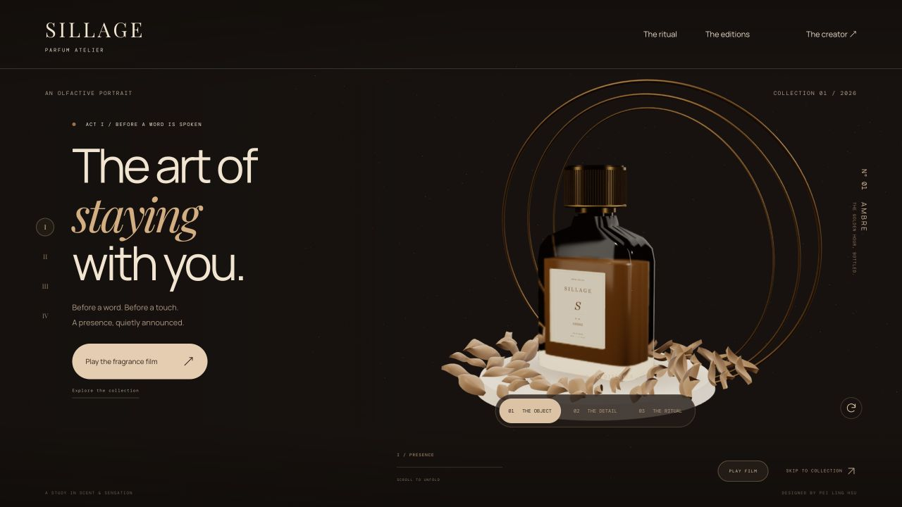
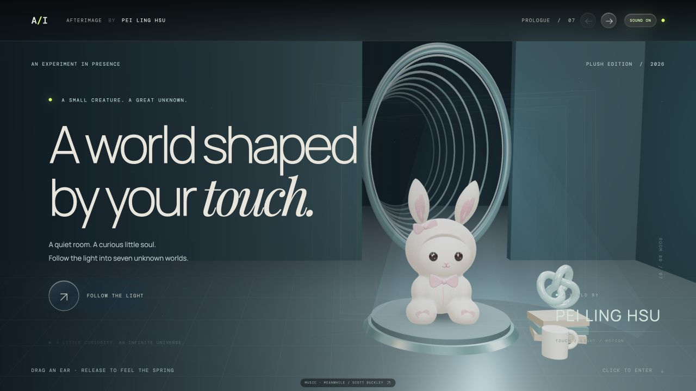

01 / BRAND EXPERIENCEExplore project ↗SILLAGE
讓香氣成為看得見的故事。

01 / BRAND EXPERIENCEExplore project ↗讓香氣成為看得見的故事。

02 / INTERACTIVE WORLDEnter the world ↗由你的觸碰，展開七段探索。
讓成長紀錄，更清楚也更有溫度。
從品牌的個性出發，讓視覺、互動與使用流程一起說話。每一個畫面，都應該讓人知道下一步要去哪裡。
品牌形象頁、產品展示與活動網站。從版面、字體到上線，形成完整的數位體驗。
Three.js 立體場景、產品互動與鏡頭敘事。依裝置與內容需求，安排適合的動畫與互動。
儀表板、資料表單與行動介面，整理資訊層級，讓主要任務更清楚、操作更順手。
想聊聊你的品牌或網站？
留下需求大綱，在目前聯絡的平台傳給我。